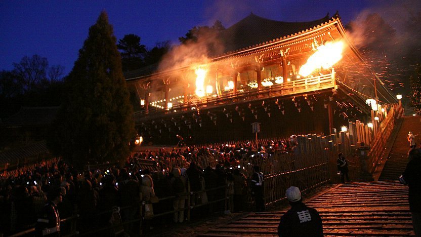
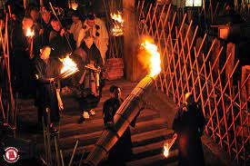
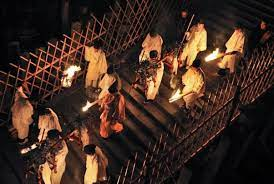

OMIZUTORI – MARCH
Omizutori (お水取り) is the commonly used name for Shunie, a series of events held annually from March 1 to 14 at Todaiji Temple. This collection of Buddhist repentance rituals has been held every year for over 1250 years, making it one of the oldest recurring Buddhist events in Japan.
Omizutori is performed at Nigatsudo Hall, a sub-complex of Todaiji, which stands not far from the temple's main hall on the slope of a hill. Nigatsudo literally means "second month hall", referring to the second month of the lunar calendar, when Omizutori has traditionally been held. The second month of the lunar calendar roughly corresponds to March of the solar calendar.


